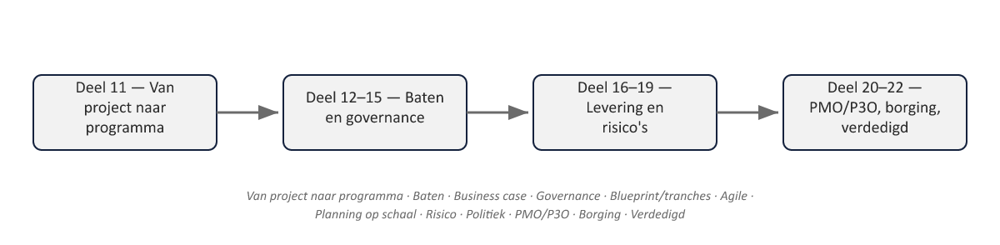

01
Het laatste deel van niveau 2
⏱ 3 minDit deel combineert, over twee dagdelen, examentraining voor PRINCE2 7 Practitioner en MSP 5e editie Foundation (met een herhaling van het IPMA-C-toetsformat, deel 19) met de capstone: het volledige Programma Mutatieplatform — business case, governance, blueprint, tranches, risico’s, batenrealisatie — opgesteld en verdedigd voor een sponsoring group.

Controlevragen
Uit het proefexamen bij deel 22, met antwoordsleutel uit de docentenhandleiding
1Wat onderscheidt een programma van een verzameling losse projecten?
A. Een gedeelde deadline
B. Een gedeelde, strategische uitkomst die geen project alleen kan realiseren
C. Een groter budget
D. Meer dan drie projectenToon antwoord
Juist antwoord: B. een gedeelde, strategische uitkomst die geen project alleen kan realiseren.
2Welk MSP-principe wordt het meest geraakt als een programma vasthoudt aan een verouderde strategie?
A. Bring pace and value
B. Align with priorities
C. Deploy diverse skills
D. Collaborate across boundariesToon antwoord
Juist antwoord: B. align with priorities.
3In de Benefits Dependency Network-gedachte: wat komt direct vóór een intermediate benefit?
A. Een end benefit
B. Een enabler
C. Een business change
D. Een dis-benefitToon antwoord
Juist antwoord: C. een business change (de keten loopt enabler → business change → intermediate benefit → end benefit).
4Welk orgaan heeft gedelegeerd gezag om een programma te richten?
A. Programme Board
B. Sponsoring group
C. Programme Office
D. Centre of ExcellenceToon antwoord
Juist antwoord: B. de sponsoring group richt; de Programme Board stuurt de levering aan.
5Waarom is een tranche geen willekeurige opdeling van werk?
A. Omdat elke tranche precies even lang moet duren
B. Omdat een tranche een betekenisvolle stapverandering in capaciteit en baten vertegenwoordigt
C. Omdat tranches wettelijk verplicht zijn
D. Omdat elke tranche evenveel budget moet hebbenToon antwoord
Juist antwoord: B. een betekenisvolle stapverandering, geen willekeurige opdeling.
6Wat meet de Agilometer?
A. De voortgang van een sprint
B. De geschiktheid van de projectomgeving voor een agile aanpak, via zes sliders
C. De kwaliteit van opgeleverde producten
D. De omvang van het programmabudgetToon antwoord
Juist antwoord: B. de geschiktheid van de omgeving voor agile, via zes sliders.
7Waarom is geaggregeerde EVM op programmaniveau lastiger dan op projectniveau?
A. Omdat EVM niet op programmaniveau bestaat
B. Omdat verschillende projecten andere voortgangsdefinities en maateenheden gebruiken
C. Omdat programma’s geen budget hebben
D. Omdat toleranties niet gelden op programmaniveauToon antwoord
Juist antwoord: B. verschillende voortgangsdefinities en maateenheden tussen agile en traditionele projecten.
8Wat is het belangrijkste verschil tussen IPMA-D en IPMA-C in toetsvorm?
A. IPMA-C heeft geen schriftelijk examen
B. IPMA-C vereist een assessmentgesprek met aantoonbare praktijkervaring
C. IPMA-D is moeilijker
D. Er is geen verschilToon antwoord
Juist antwoord: B. het assessmentgesprek met praktijkbewijs.